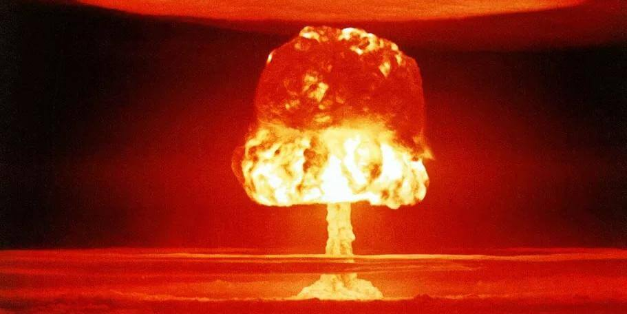
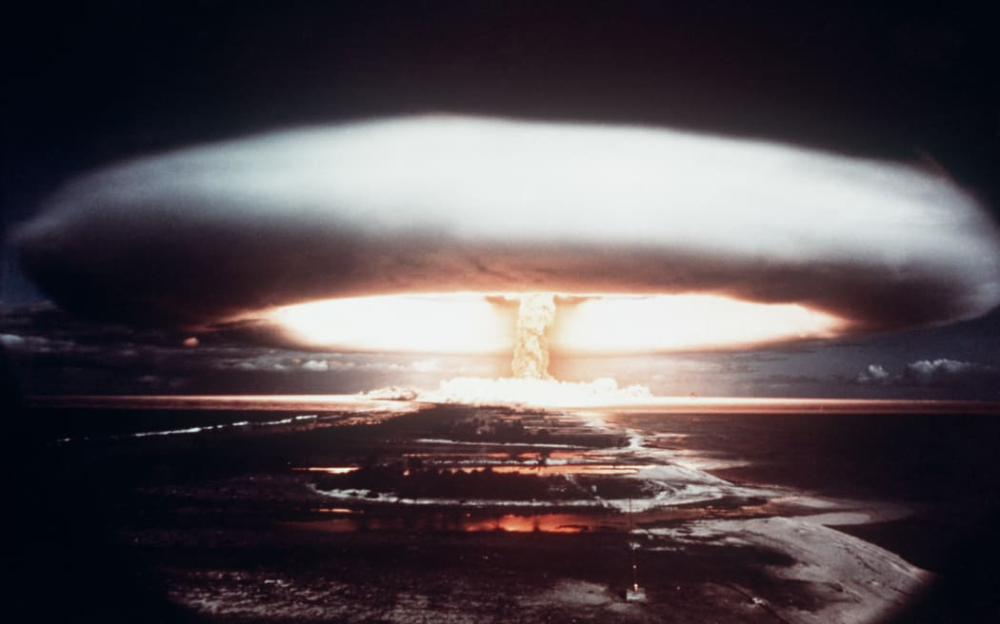

- The long-term consequences and impact of nuclear weapons on society, politics, and the environment are referred to as the "legacy of the nuclear bomb." The devastation and casualties brought on by the 1945 atomic bombings of Hiroshima and Nagasaki are one of the main elements of the legacy of the nuclear bomb. Over 200,000 people, mostly civilians, were killed in the bombings, and survivors experienced long-term health effects. The survivors, also referred to as "hibakusha," and their children were severely psychologically affected by the bombings.
- The ongoing danger of nuclear conflict and the arms race that followed during the Cold War are two more effects of the nuclear bomb. International relations have been significantly impacted by the existence of nuclear weapons and the potential for nuclear war, which has raised worries about the possible repercussions of a nuclear conflict.
- The legacy of the nuclear bomb is greatly affected by both the spread of nuclear technology and the proliferation of nuclear weapons. The spread of nuclear weapons among nations raises the possibility of nuclear conflict and sparks an arms race. The risk of nuclear war may rise as a result, destabilizing international relations.
- Another significant aspect of nuclear weapons' legacy is how they affect the environment. Radioactive materials can be released during nuclear weapon testing and during a nuclear attack, which could harm people and the environment for years or even decades after a detonation.
- The legacy of the nuclear bomb also includes its effects on society and culture, debates over the morality and ethics of using nuclear weapons, and initiatives to stop the spread of nuclear weapons and lessen the likelihood of nuclear war.

